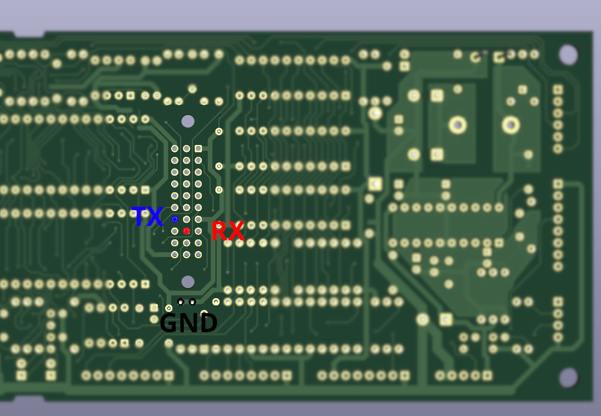

Datenbanken reparieren
Die Datenbank selbst
Die Datenbank hat zwei Schutzschaltungen, diese müssen deaktiviert werden damit das Programm nicht gleich wieder verloren geht.
Um diese zu deaktivieren, muss die Datenbank geöffnet werden wobei die Schutzschaltungen auslösen.
Deswegen dies auch erst versuchen wenn die Datenbank schon kaputt ist.
Es bringt nichts dies schon vorher "auf Reserve" zu probieren.
Auslesen lässt sich die Datenbank über die serielle Schnittstelle, ohne diese zu öffnen.
Schutzschaltungen
Ist die Datenbank dann kaputt, kann man diese öffnen indem man den Aufkleber drum herum mit einem Messer an der Kante entlangt einschneidet
Der Blechdeckel darunter ist geklipst und lässt sich mit einer Plastikkarte oder Schraubenzieher lösen.
Spätestens jetzt ist die Datenbank leer, wir haben die erste Schutzschaltung ausgelöst.
Bohrschutz
Im Deckel ist eine Bohrschutzplatine die einen Kontakt zur Datenbank hat.
Auf der Datenbank sieht man 4 rechteeckige Pads direkt nebeneinander in der Mitte, diese kann man in 2er Paaren oder vollständig mit einer Lötbrücke versehen.
Lichtsensor
Als nächstes kommen die Lichtsensoren, diese haben 3 Beine und sehen wie im Bild aus
Diese kann man entweder mit einem flachen Seitenschneider abknipsen oder entlöten.
Atmega
Auf den Datenbanken 1MB und größer sitzt ein Atmega48 der die Schutzschaltung überwacht und mit der Datenbank kommuniziert.
Dieser merkt sich das die Schutzschaltungen ausgelöst wurden und muss deswegen zurückgesetzt werden.
Auf der Platine sind Testpunkte über die das beim Hersteller gemacht wurde.
Diese kann man anlöten, Kabel dran halten oder eine Pogo-Pin Schablone wie beim Hersteller verwenden.
Das geht mit allen ISP-Tools die Atmega beschreiben können. Beispielsweise USBASP, alle Arduinos oder viele EEPROM-Brenner.
Die Programmversion aus dem Discord deaktiviert das Schutzprogramm dauerhauft sodass der Atmel nur ein mal beschrieben werden muss.
Seriell neu beschreiben
Um das Programm zu übertragen muss man von einem PC eine serielle Verbindung zur Datenbank herstellen.
Leider geht das nicht über die normale Ausleseschnittstelle des Automaten.
Auf der Unterseite der Merkur Profitech 3000 (EU) Steuereinheit gibt es am Stecker P4 zur Datenbank 2 unbelegte Kontakte, dort verbindet man Masse und die beiden Kontakte mit einem USB-TTL Adapter
Im Discord gibt es einen Link zu einer Webanwendung mit der sich die Programmdaten übertragen lassen.
Zurück